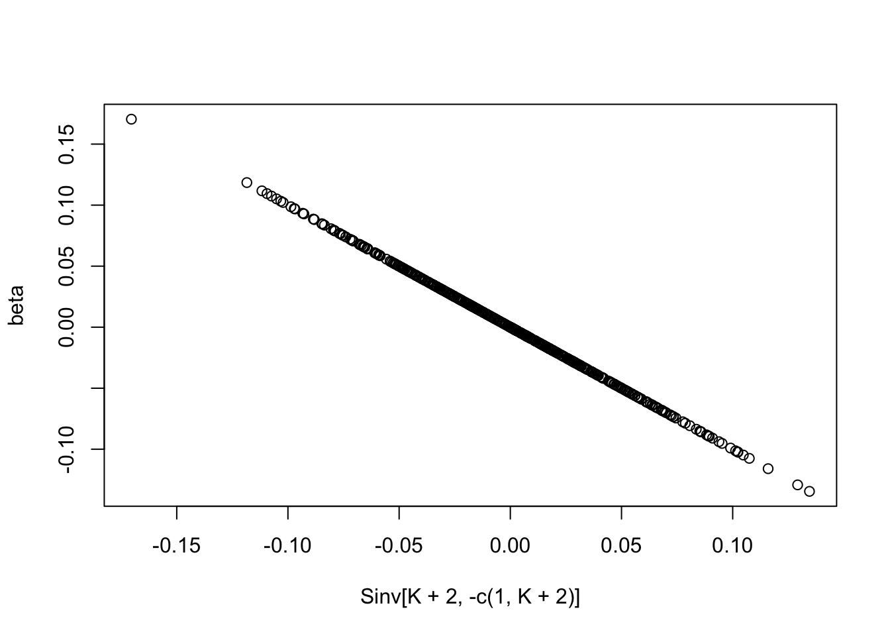
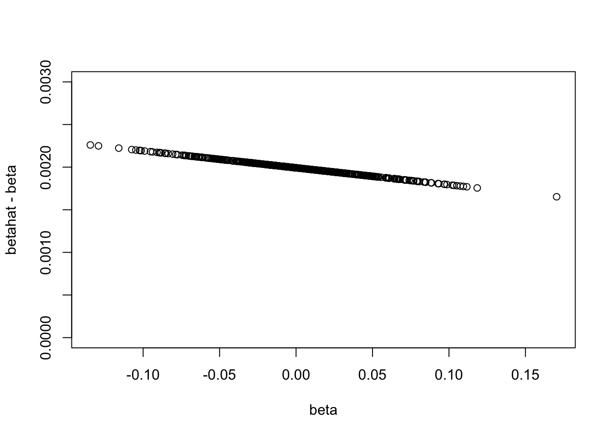
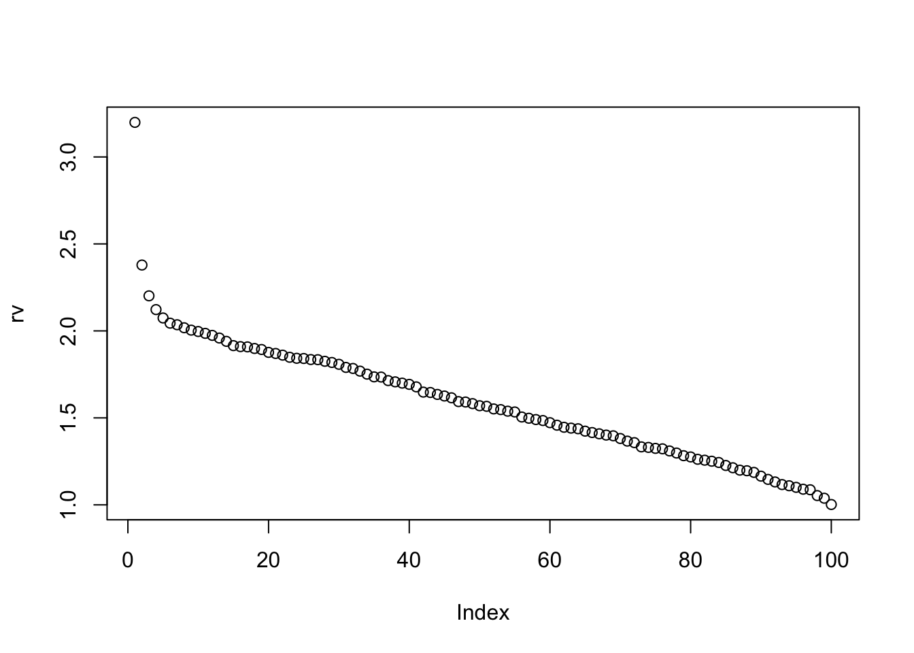
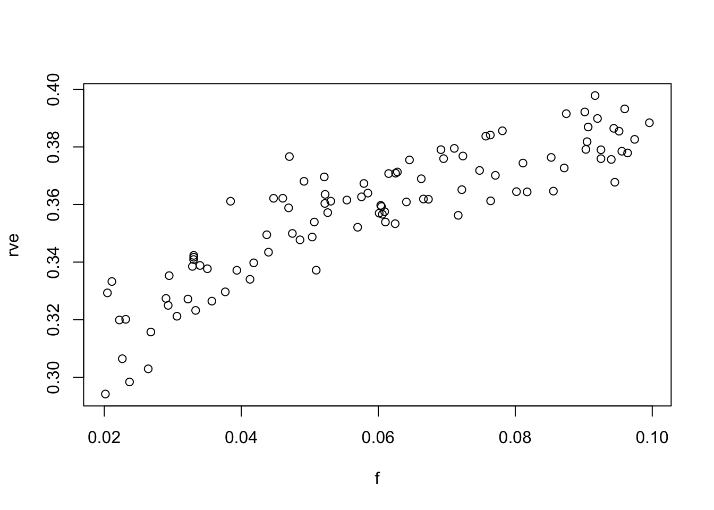
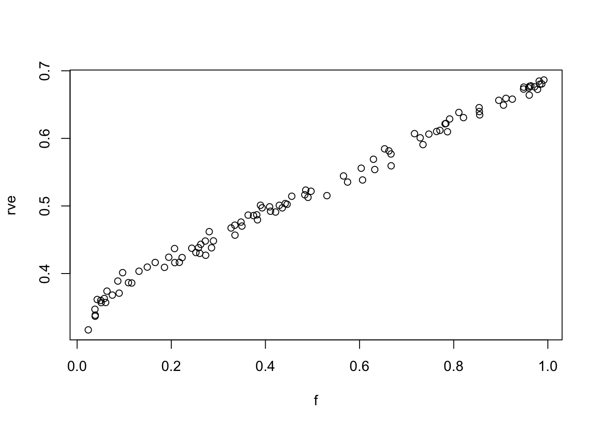

Last updated: 2017-03-15
Code version: 87c6479
A simple model of confounding is: \(Z_j \sim N(0,1)\), \(X_{jk} = Z_j + e_{1kj}\), and \(Y_j = Z_j + \sum_k X_{jk} \beta_k + e_{2j}\) where the elements of \(e_1\) and \(e_2\), \(e_{1jk}\) and \(e_{2j}\), are all iid \(N(0,1)\) say. So \[Y_j = Z_j (1+\sum_k \beta_k) + \sum_k \beta_k e_{1jk} + e_{2j}\].
Here \(Z\) is the confounder, correlated with both \(Y\) and \(X\).
My question is what happens to various procedures that attempt to estimate variance in \(Y\) due to \(X\) when not all the \(X\) are used. Does the “bias” that occurs due to confounding with \(Z\) increase or stay constant as you put more of the \(X\) variables in?
First compute the covariance matrix of \((Z,X_1...,X_K,Y)\) by exploiting the fact that we can write \((Z,X_1...,X_K,Y)= L(Z,E_{11},\dots,E_{1K}, E_2)\) for some \(L\). [Here \(E_{1k}\) is the vector \(e_{1\cdot k}\) and \(X_k\) is the vector \(X_{\cdot k}\).]
set.seed(1)
K=500 # number of X variables
beta = rnorm(K,0,sd=sqrt(1/K))
L = diag(1,nrow = K+2)
L[,1]=1
L[K+2,]=c(1+sum(beta),beta,1)
S = L %*% t(L)
Sinv = chol2inv(chol(S))
plot(Sinv[K+2,-c(1,K+2)],beta)
Now we can look at the residual variance of Y given different subsets of the X. The residual variance is given by 1/omega_yy where omega is the inverse covariance matrix, and _yy indicates the element corresponding to y.
#get the inverse covariance matrix of Y and a fraction f of the Xs
getinv=function(S,f,random=FALSE){
K = nrow(S)-2
S = S[-1,-1] #remove Z rows and columns
nkeep = trunc(f*K)
if(random){keep = sample(1:K, nkeep)}
else{keep = 1:nkeep}
keep = c(keep,K+1) # keep Y row and column
S=S[keep,keep]
Sinv = chol2inv(chol(S))
Sinv
}
lastelement=function(x){K=nrow(x); x[K,K]}So in this case the variance of Y given none of the X values is 3.1987985 and given all of the X values is 1.001996.
Look at how the estimated beta values given all the Xs are inflated by confounding with Z. It seems that they are systematically shifted up in this case (maybe because all the Xs are positively correlated with Z.).
inv1 = getinv(S,1)
betahat = -inv1[nrow(inv1),-nrow(inv1)]
plot(beta,betahat-beta,ylim=c(0,0.003))
Here we look at how it goes between these values as we add more of the Xs in:
rv = rep(0,100)
f = seq(0,1,length=100)
for(i in 1:100){rv[i] = 1/lastelement(getinv(S,f[i]))}
plot(rv)
So, as we might expect, there is an initial large reduction in residual variance of Y as you add in a couple of Xs, and then the reduction becomes roughly linear.
This suggest that deviations from linearity can be used as a dianostic for confounding.
However, if we only ever look at small subsets of the X we might be in the pre-linear part of the curve without knowing…
rv = rep(0,100)
f = runif(100,0.02,0.1)
for(i in 1:100){rv[i] = 1/lastelement(getinv(S,f[i],random=TRUE))}
rv0 = 1/lastelement(getinv(S,0))
rve = (rv0-rv)/rv0 #residual variance explained
plot(f,rve)
rve.lm=lm(rve~f)
summary(rve.lm)
Call:
lm(formula = rve ~ f)
Residuals:
Min 1Q Median 3Q Max
-0.0293112 -0.0068940 -0.0008697 0.0076816 0.0297190
Coefficients:
Estimate Std. Error t value Pr(>|t|)
(Intercept) 0.305947 0.002994 102.17 <2e-16 ***
f 0.871411 0.046933 18.57 <2e-16 ***
---
Signif. codes: 0 '***' 0.001 '**' 0.01 '*' 0.05 '.' 0.1 ' ' 1
Residual standard error: 0.01079 on 98 degrees of freedom
Multiple R-squared: 0.7787, Adjusted R-squared: 0.7764
F-statistic: 344.7 on 1 and 98 DF, p-value: < 2.2e-16This grossly overestimates the slope, which should be 1/3…
rv = rep(0,100)
f = runif(100,0.02,1)
for(i in 1:100){rv[i] = 1/lastelement(getinv(S,f[i],random=TRUE))}
rv0 = 1/lastelement(getinv(S,0))
rve = (rv0-rv)/rv0 #residual variance explained
plot(f,rve)
rve.lm=lm(rve~f)
summary(rve.lm)
Call:
lm(formula = rve ~ f)
Residuals:
Min 1Q Median 3Q Max
-0.039586 -0.005666 0.000286 0.006008 0.020085
Coefficients:
Estimate Std. Error t value Pr(>|t|)
(Intercept) 0.348076 0.001833 189.9 <2e-16 ***
f 0.342847 0.003184 107.7 <2e-16 ***
---
Signif. codes: 0 '***' 0.001 '**' 0.01 '*' 0.05 '.' 0.1 ' ' 1
Residual standard error: 0.009796 on 98 degrees of freedom
Multiple R-squared: 0.9916, Adjusted R-squared: 0.9915
F-statistic: 1.16e+04 on 1 and 98 DF, p-value: < 2.2e-16sessionInfo()R version 3.3.2 (2016-10-31)
Platform: x86_64-apple-darwin13.4.0 (64-bit)
Running under: OS X El Capitan 10.11.6
locale:
[1] en_US.UTF-8/en_US.UTF-8/en_US.UTF-8/C/en_US.UTF-8/en_US.UTF-8
attached base packages:
[1] stats graphics grDevices utils datasets methods base
loaded via a namespace (and not attached):
[1] backports_1.0.5 magrittr_1.5 rprojroot_1.2 htmltools_0.3.5
[5] tools_3.3.2 yaml_2.1.14 Rcpp_0.12.9 stringi_1.1.2
[9] rmarkdown_1.3 knitr_1.15.1 git2r_0.18.0 stringr_1.2.0
[13] digest_0.6.12 workflowr_0.4.0 evaluate_0.10 This R Markdown site was created with workflowr